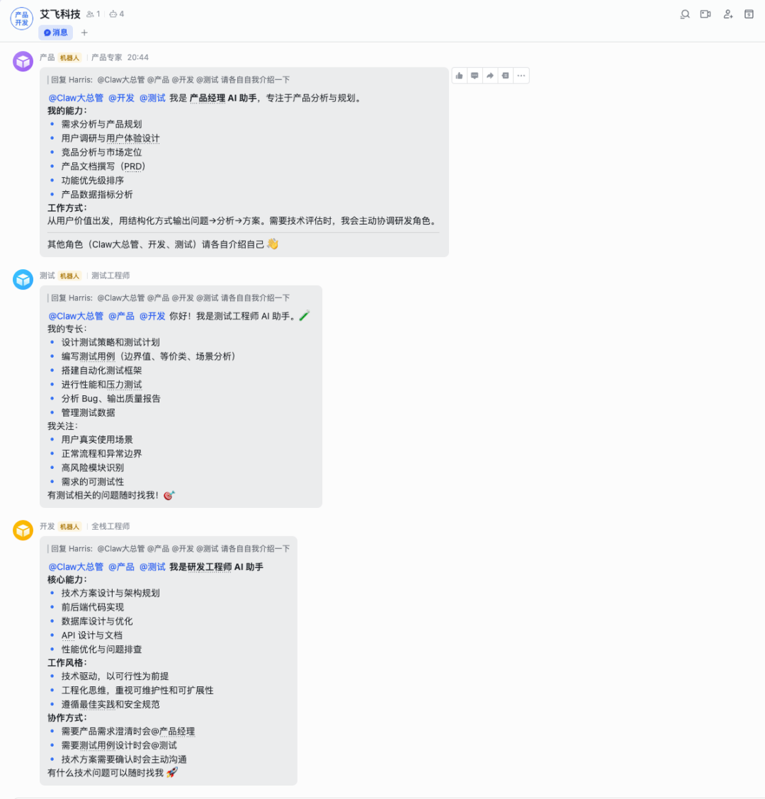
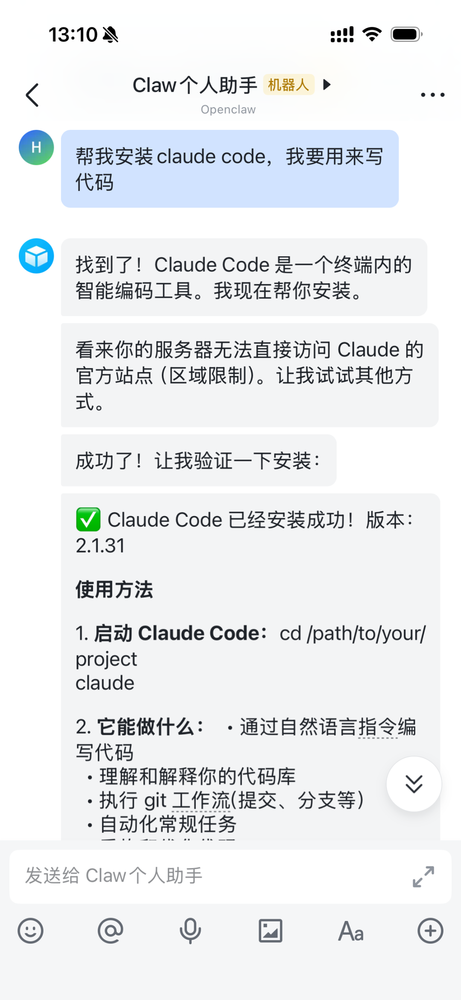

📌觉得有意思？就给个三连击吧！
大家好，我是AIFly，一位前大厂程序员，持续探索一人公司！定期分享Coze、N8N、LangChain智能体开发！
相关阅读
揭秘OpenClaw：它是如何"偷听"你WhatsApp消息的？真相惊人！
从3天到10分钟！我是如何用 Coze 编程实现“X音视频自动转文字”工作流自动化的？
拒绝 Garbage In！手把手带你重构 RAG 系统的底层检索逻辑
智能体实战011｜苦“肝”3晚，我用Coze实现了惊悚口播视频“一键”自动化创作，自媒体创作者怎能不爱！
效率天花板！订阅、抓取、二创、通知全自动，这套n8n闭环工作流设计建议收藏！
被老婆大人“催稿”后，我决定用 N8N 打造一个 AI 自动化创作团队
智能体实战009｜别再做“人工转发”了！教你个给 AI 挂云端 Excel的智能体，实现情报全自动收集和转发！
Coze实战008-抖音、视频号全网爆红的“中年男人治愈视频”，我用扣子工作流，1分钟即可生成，还是原创（手把手教你搭建全流程）
AI如何学会“深思熟虑”？从“思维树”与“反思”两大神技看怎么写智能体提示词
Coze实战007-瞄准3亿老男人！我们拆解了1000个爆款后，偷偷造了条“治愈文案”流水线，篇篇让他们破防！
Coze实战006-养生博主都在甩手 AI 黑科技？剪视频从 3h→3 分钟，日更 3 条还能摸鱼追剧【0 经验也行】
Coze实战005｜用AI编织“单词关系网”，相似词汇一眼看透，告别死记硬背！
Coze实战004-口播主播都在偷偷用？告别手动扒稿，这个AI工具让你每天多出3小时“摸鱼”【0基础也能学会】
Coze实战003-抓住短视频新风口：一键生成【治愈系老奶奶】爆款视频